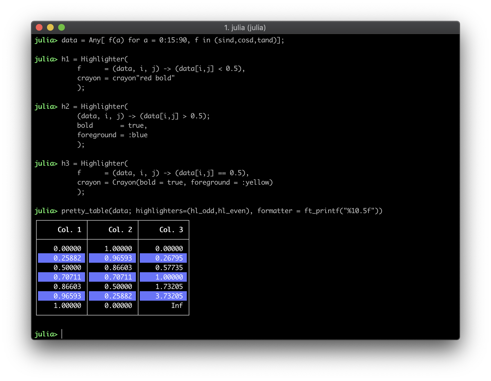

Text Back end
The following options are available when the text back end is used. Those can be passed as keywords when calling the function pretty_table:
alignment_anchor_fallback::Symbol: This keyword controls the line alignment when using the regex alignment anchors if a match is not found. If it is:l, the left of the line will be aligned with the anchor. If it is:c, the line center will be aligned with the anchor. Otherwise, the end of the line will be aligned with the anchor. (Default =:l)alignment_anchor_fallback_override::Dict{Int, Symbol}: ADict{Int, Symbol}to override the behavior offallback_alignment_anchorfor a specific column. Example:Dict(3 => :c)changes the fallback alignment anchor behavior for:conly for the column 3.alignment_anchor_regex::Dict{Int, AbstractVector{Regex}}: A dictionaryDict{Int, AbstractVector{Regex}}with a set of regexes that is used to align the values in the columns (keys). The characters at the first regex match (or anchor) of each line in every cell of the column will be aligned. The regex match is searched in the same order as the regexes appear on the vector. The regex matching is applied after the cell conversion to string, which includes the formatters. If no match is found for a specific line, the alignment of this line depends on the optionsalignment_anchor_fallbackandalignment_anchor_fallback_override. If the key0is present, the related regexes will be used to align all the columns. In this case, all the other keys will be neglected. Example:Dict(2 => [r"\\."])aligns the decimal point of the cells in the second column. (Default =Dict{Int, Vector{Regex}}())autowrap::Bool: Iftrue, the text will be wrapped on spaces to fit the column. Notice that this function requireslinebreaks = trueand the column must have a fixed size (seecolumns_width).body_hlines::Vector{Int}: A vector ofIntindicating row numbers in which an additional horizontal line should be drawn after the row. Notice that numbers lower than 0 and equal or higher than the number of printed rows will be neglected. This vector will be appended to the one inhlines, but the indices here are related to the printed rows of the body. Thus, if1is added tobody_hlines, a horizontal line will be drawn after the first data row. (Default =Int[])body_hlines_format::Union{Nothing, NTuple{4, Char}}: A tuple of 4 characters specifying the format of the horizontal lines that will be drawn bybody_hlines. The characters must be the left intersection, the middle intersection, the right intersection, and the row. If it isnothing, it will use the same format specified intf. (Default =nothing)columns_width::Union{Int, AbstractVector{Int}}: A set of integers specifying the width of each column. If the width is equal or lower than 0, it will be automatically computed to fit the large cell in the column. If it is a single integer, this number will be used as the size of all columns. (Default = 0)crop::Symbol: Select the printing behavior when the data is bigger than the available display size (seedisplay_size). It can be:bothto crop on vertical and horizontal direction,:horizontalto crop only on horizontal direction,:verticalto crop only on vertical direction, or:noneto do not crop the data at all. If theiohas:limit => true,cropis set to:bothby default. Otherwise, it is set to:noneby default.crop_subheader::Bool: Iftrue, the sub-header size will not be taken into account when computing the column size. Hence, the print algorithm can crop it to save space. This has no effect if the user selects a fixed column width. (Default =false)continuation_row_alignment::Symbol: A symbol that defines the alignment of the cells in the continuation row. This row is printed if the table is vertically cropped. (Default =:c)display_size::Tuple{Int, Int}: A tuple of two integers that defines the display size (num. of rows, num. of columns) that is available to print the table. It is used to crop the data depending on the value of the keywordcrop. Notice that if a dimension is not positive, it will be treated as unlimited. (Default =displaysize(io))ellipsis_line_skip::Integer: An integer defining how many lines will be skipped from showing the ellipsis that indicates the text was cropped. (Default = 0)equal_columns_width::Bool: Iftrue, all the columns will have the same width. (Default =false)highlighters::Union{Highlighter, Tuple}: An instance ofHighlighteror a tuple with a list of text highlighters (see the section Text Highlighters).hlines::Union{Nothing, Symbol, AbstractVector}: This variable controls where the horizontal lines will be drawn. It can benothing,:all,:noneor a vector of integers. (Default =nothing)- If it is
nothing, which is the default, the configuration will be obtained from the table format in the variabletf(seeTextFormat). - If it is
:all, all horizontal lines will be drawn. - If it is
:none, no horizontal line will be drawn. - If it is a vector of integers, the horizontal lines will be drawn only after the rows in the vector. Notice that the top line will be drawn if
0is inhlines, and the header and subheaders are considered as only 1 row. Furthermore, it is important to mention that the row number in this variable is related to the printed rows. Thus, it is affected by the option to suppress the headershow_header. Finally, for convenience, the top and bottom lines can be drawn by adding the symbols:beginand:endto this vector, respectively, and the line after the header can be drawn by adding the symbol:header.
- If it is
The values of body_hlines will be appended to this vector. Thus, horizontal lines can be drawn even if hlines is :none.
linebreaks::Bool: Iftrue,\\nwill break the line inside the cells. (Default =false)maximum_columns_width::Union{Int, AbstractVector{Int}}: A set of integers specifying the maximum width of each column. If the width is equal or lower than 0, it will be ignored. If it is a single integer, this number will be used as the maximum width of all columns. Notice that the parametercolumns_widthhas precedence over this one. (Default = 0)minimum_columns_width::Union{Int, AbstractVector{Int}}: A set of integers specifying the minimum width of each column. If the width is equal or lower than 0, it will be ignored. If it is a single integer, this number will be used as the minimum width of all columns. Notice that the parametercolumns_widthhas precedence over this one. (Default = 0)newline_at_end::Bool: Iffalse, the table will not end with a newline character. (Default =true)overwrite::Bool: Iftrue, the same number of lines in the printed table will be deleted from the outputio. This can be used to update the table in the display continuously. (Default =false)reserved_display_lines::Int: Number of lines to be left at the beginning of the printing when vertically cropping the output. Notice that the lines required to show the title are automatically computed. (Default = 0)row_number_alignment::Symbol: Select the alignment of the row number column (see the section Alignment). (Default =:r)show_omitted_cell_summary::Bool: Iftrue, a summary will be printed after the table with the number of columns and rows that were omitted. (Default =true)tf::TextFormat: Table format used to print the table (seeTextFormat). (Default =tf_unicode)title_autowrap::Bool: Iftrue, the title text will be wrapped considering the title size. Otherwise, lines larger than the title size will be cropped. (Default =false)title_same_width_as_table::Bool: Iftrue, the title width will match that of the table. Otherwise, the title size will be equal to the display width. (Default =false)vcrop_mode::Symbol: This variable defines the vertical crop behavior. If it is:bottom, the data, if required, will be cropped in the bottom. On the other hand, if it is:middle, the data will be cropped in the middle if necessary. (Default =:bottom)vlines::Union{Nothing, Symbol, AbstractVector}: This variable controls where the vertical lines will be drawn. It can benothing,:all,:noneor a vector of integers. (Default =nothing)- If it is
nothing, which is the default, the configuration will be obtained from the table format in the variabletf(seeTextFormat). - If it is
:all, all vertical lines will be drawn. - If it is
:none, no vertical line will be drawn. - If it is a vector of integers, the vertical lines will be drawn only after the columns in the vector. Notice that the top line will be drawn if
0is invlines. Furthermore, it is important to mention that the column number in this variable is related to the printed column. Thus, it is affected by the optionsrow_labelsandshow_row_number. Finally, for convenience, the left and right vertical lines can be drawn by adding the symbols:beginand:endto this vector, respectively, and the line after the header can be drawn by adding the symbol:header.
- If it is
The following keywords related to crayons are available to customize the output decoration:
border_crayon::Crayon: Crayon to print the border.header_crayon::Union{Crayon, Vector{Crayon}}: Crayon to print the header.omitted_cell_summary_crayon::Crayon: Crayon used to print the omitted cell summary.row_label_crayon::Crayon: Crayon to print the row labels.row_label_header_crayon::Crayon: Crayon to print the header of the column with the row labels.row_number_header_crayon::Crayon: Crayon for the header of the column with the row numbers.subheader_crayon::Union{Crayon, Vector{Crayon}}: Crayon to print sub-headers.text_crayon::Crayon: Crayon to print default text.title_crayon::Crayon: Crayon to print the title.
The keywords header_crayon and subheader_crayon can be a Crayon or a Vector{Crayon}. In the first case, the Crayon will be applied to all the elements. In the second, each element can have its own crayon, but the length of the vector must be equal to the number of columns in the data.
If the renderer show is used, all strings will be printed with surrounding quotes. However, if a formatter modifies a value and return a string, those surrounding quotes will be removed if the original value is not a string.
Crayons
A Crayon is an object that handles a style for text printed on terminals. It is defined in the package Crayons.jl. There are many options available to customize the style, such as foreground color, background color, bold text, etc.
A Crayon can be created in two different ways:
julia> Crayon(foreground = :blue, background = :black, bold = :true)
julia> crayon"blue bg:black bold"For more information, see the Crayon.jl documentation.
The Crayon.jl package is re-exported by PrettyTables.jl. Hence, you do not need using Crayons to create a Crayon.
Cropping
The keyword crop can be used to define how the output will be cropped if the display has limits. The default behavior depends on the property :limit of the io. If io has :limit => true, the default value of crop is :both. Otherwise, if :limit => false or it is not defined at all, crop defaults to :none.
If pretty_table is called without io, stdout is wrapped in a IOContext with :limit => true.
The display size can be configured by the keyword display_size, which is a tuple of two Int with the number of rows and columns, respectively. If this keyword is not specified, it is automatically obtained using the function displaysize(io).
julia> data = Any[1 false 1.0 0x01 ;
2 true 2.0 0x02 ;
3 false 3.0 0x03 ;
4 true 4.0 0x04 ;
5 false 5.0 0x05 ;
6 true 6.0 0x06 ;];
julia> pretty_table(data, display_size = (11, 30))
┌────────┬────────┬────────┬──
│ Col. 1 │ Col. 2 │ Col. 3 │ ⋯
├────────┼────────┼────────┼──
│ 1 │ false │ 1.0 │ ⋯
│ 2 │ true │ 2.0 │ ⋯
│ 3 │ false │ 3.0 │ ⋯
│ ⋮ │ ⋮ │ ⋮ │ ⋱
└────────┴────────┴────────┴──
1 column and 3 rows omitted
julia> pretty_table(data, display_size = (11, 30), crop = :none)
┌────────┬────────┬────────┬────────┐
│ Col. 1 │ Col. 2 │ Col. 3 │ Col. 4 │
├────────┼────────┼────────┼────────┤
│ 1 │ false │ 1.0 │ 1 │
│ 2 │ true │ 2.0 │ 2 │
│ 3 │ false │ 3.0 │ 3 │
│ 4 │ true │ 4.0 │ 4 │
│ 5 │ false │ 5.0 │ 5 │
│ 6 │ true │ 6.0 │ 6 │
└────────┴────────┴────────┴────────┘In vertical cropping, the header and the first table row is always printed.
The highlighters will work even in partially printed data.
If the user selects a fixed size for the columns (using the keyword columns_width), enables line breaks (using the keyword linebreaks), and sets autowrap = true, the algorithm wraps the text on spaces to automatically fit the space.
julia> data = ["One very very very big long long line"; "Another very very very big big long long line"];
julia> pretty_table(data, columns_width = 10, autowrap = true, linebreaks = true, show_row_number = true)
┌─────┬────────────┐
│ Row │ Col. 1 │
├─────┼────────────┤
│ 1 │ One very │
│ │ very very │
│ │ big long │
│ │ long line │
│ 2 │ Another │
│ │ very very │
│ │ very big │
│ │ big long │
│ │ long line │
└─────┴────────────┘It is also possible to change the vertical cropping behavior to crop the table in the middle instead of the bottom. This can be accomplished by passing the option vcrop_mode = :middle to pretty_table:
julia> data = Any[1 false 1.0 0x01 ;
2 true 2.0 0x02 ;
3 false 3.0 0x03 ;
4 true 4.0 0x04 ;
5 false 5.0 0x05 ;
6 true 6.0 0x06 ;];
julia> pretty_table(data, display_size = (11, 30), vcrop_mode = :middle)
┌────────┬────────┬────────┬──
│ Col. 1 │ Col. 2 │ Col. 3 │ ⋯
├────────┼────────┼────────┼──
│ 1 │ false │ 1.0 │ ⋯
│ 2 │ true │ 2.0 │ ⋯
│ ⋮ │ ⋮ │ ⋮ │ ⋱
│ 6 │ true │ 6.0 │ ⋯
└────────┴────────┴────────┴──
1 column and 3 rows omittedText Highlighters
A set of highlighters can be passed as a Tuple to the highlighters keyword. Each highlighter is an instance of the structure Highlighter that contains three fields:
f::Function: Function with the signaturef(data, i, j)in which should returntrueif the element(i, j)indatamust be highlighted, orfalseotherwise.fd::Function: Function with the signaturef(h,data,i,j)in whichhis the highlighter. This function must return theCrayonto be applied to the cell that must be highlighted.crayon::Crayon: TheCrayonto be applied to the highlighted cell if the defaultfdis used.
The function f has the following signature:
f(data, i, j)in which data is a reference to the data that is being printed, and i and j are the element coordinates that are being tested. If this function returns true, the cell (i, j) will be highlighted.
If the function f returns true, the function fd(h, data, i, j) will be called and must return a Crayon that will be applied to the cell.
A highlighter can be constructed using three helpers:
Highlighter(f::Function; kwargs...)where it will construct a Crayon using the keywords in kwargs and apply it to the highlighted cell,
Highlighter(f::Function, crayon::Crayon)where it will apply the crayon to the highlighted cell, and
Highlighter(f::Function, fd::Function)where it will apply the Crayon returned by the function fd to the highlighted cell.
If only a single highlighter is wanted, it can be passed directly to the keyword highlighter without being inside a Tuple.
If multiple highlighters are valid for the element (i, j), the applied style will be equal to the first match considering the order in the tuple highlighters.
If the highlighters are used together with Formatters, the change in the format will not affect the parameter data passed to the highlighter function f. It will always receive the original, unformatted value.
julia> data = Any[f(a) for a = 0:15:90, f in (sind, cosd, tand)]
julia> h1 = Highlighter(f = (data, i, j) -> (data[i, j] < 0.5),
crayon = crayon"red bold" )
julia> h2 = Highlighter((data,i,j) -> (data[i, j] > 0.5),
bold = true,
foreground = :blue )
julia> h3 = Highlighter(f = (data, i, j) -> (data[i, j] == 0.5),
crayon = Crayon(bold = true, foreground = :yellow) )
julia> pretty_table(data, highlighters = (h1, h2, h3), compact_printing = false)
julia> data = Any[f(a) for a = 0:15:90, f in (sind, cosd, tand)]
julia> hl_odd = Highlighter(f = (data, i, j) -> i % 2 == 0,
crayon = Crayon(background = :light_blue))
julia> pretty_table(data, highlighters = hl_odd, formatters = ft_printf("%10.5f"))
There are a set of pre-defined highlighters (with names hl_*) to make the usage simpler. They are defined in the file ./src/backends/text/predefined_highlighters.jl.
Text Table Formats
The following table formats are available when using the text back end:
tf_unicode (Default)
┌────────┬────────┬────────┬────────┐
│ Col. 1 │ Col. 2 │ Col. 3 │ Col. 4 │
├────────┼────────┼────────┼────────┤
│ 1 │ false │ 1.0 │ 1 │
│ 2 │ true │ 2.0 │ 2 │
│ 3 │ false │ 3.0 │ 3 │
└────────┴────────┴────────┴────────┘tf_ascii_dots
.....................................
: Col. 1 : Col. 2 : Col. 3 : Col. 4 :
:........:........:........:........:
: 1 : false : 1.0 : 1 :
: 2 : true : 2.0 : 2 :
: 3 : false : 3.0 : 3 :
:........:........:........:........:tf_ascii_rounded
.--------.--------.--------.--------.
| Col. 1 | Col. 2 | Col. 3 | Col. 4 |
:--------+--------+--------+--------:
| 1 | false | 1.0 | 1 |
| 2 | true | 2.0 | 2 |
| 3 | false | 3.0 | 3 |
'--------'--------'--------'--------'tf_borderless
Col. 1 Col. 2 Col. 3 Col. 4
1 false 1.0 1
2 true 2.0 2
3 false 3.0 3tf_compact
-------- -------- -------- --------
Col. 1 Col. 2 Col. 3 Col. 4
-------- -------- -------- --------
1 false 1.0 1
2 true 2.0 2
3 false 3.0 3
-------- -------- -------- --------tf_markdown
| Col. 1 | Col. 2 | Col. 3 | Col. 4 |
|--------|--------|--------|--------|
| 1 | false | 1.0 | 1 |
| 2 | true | 2.0 | 2 |
| 3 | false | 3.0 | 3 |tf_matrix
┌ ┐
│ 1 false 1.0 1 │
│ 2 true 2.0 2 │
│ 3 false 3.0 3 │
└ ┘In this case, the table format matrix was printed with the option show_header = false.
tf_mysql
+--------+--------+--------+--------+
| Col. 1 | Col. 2 | Col. 3 | Col. 4 |
+--------+--------+--------+--------+
| 1 | false | 1.0 | 1 |
| 2 | true | 2.0 | 2 |
| 3 | false | 3.0 | 3 |
+--------+--------+--------+--------+tf_simple
========= ======== ======== =========
Col. 1 Col. 2 Col. 3 Col. 4
========= ======== ======== =========
1 false 1.0 1
2 true 2.0 2
3 false 3.0 3
========= ======== ======== =========tf_unicode_rounded
╭────────┬────────┬────────┬────────╮
│ Col. 1 │ Col. 2 │ Col. 3 │ Col. 4 │
├────────┼────────┼────────┼────────┤
│ 1 │ false │ 1.0 │ 1 │
│ 2 │ true │ 2.0 │ 2 │
│ 3 │ false │ 3.0 │ 3 │
╰────────┴────────┴────────┴────────╯The format unicode_rounded should look awful on your browser, but it should be printed fine on your terminal.
julia> data = Any[f(a) for a = 0:15:90, f in (sind, cosd, tand)];
julia> pretty_table(data, tf = tf_ascii_dots)
..................................
: Col. 1 : Col. 2 : Col. 3 :
:..........:..........:..........:
: 0.0 : 1.0 : 0.0 :
: 0.258819 : 0.965926 : 0.267949 :
: 0.5 : 0.866025 : 0.57735 :
: 0.707107 : 0.707107 : 1.0 :
: 0.866025 : 0.5 : 1.73205 :
: 0.965926 : 0.258819 : 3.73205 :
: 1.0 : 0.0 : Inf :
:..........:..........:..........:
julia> pretty_table(data, tf = tf_compact)
---------- ---------- ----------
Col. 1 Col. 2 Col. 3
---------- ---------- ----------
0.0 1.0 0.0
0.258819 0.965926 0.267949
0.5 0.866025 0.57735
0.707107 0.707107 1.0
0.866025 0.5 1.73205
0.965926 0.258819 3.73205
1.0 0.0 Inf
---------- ---------- ----------It is also possible to define you own custom table by creating a new instance of the structure TextFormat. For example, let's say that you want a table like simple that does not print the bottom line:
julia> data = Any[f(a) for a = 0:15:90, f in (sind, cosd, tand)];
julia> tf = TextFormat(up_right_corner = '=',
up_left_corner = '=',
bottom_left_corner = '=',
bottom_right_corner = '=',
up_intersection = ' ',
left_intersection = '=',
right_intersection = '=',
middle_intersection = ' ',
bottom_intersection = ' ',
column = ' ',
row = '=',
hlines = [:begin, :header]);
julia> pretty_table(data, tf = tf)
=========== ========== ===========
Col. 1 Col. 2 Col. 3
=========== ========== ===========
0.0 1.0 0.0
0.258819 0.965926 0.267949
0.5 0.866025 0.57735
0.707107 0.707107 1.0
0.866025 0.5 1.73205
0.965926 0.258819 3.73205
1.0 0.0 Inf
or that does not print the header line:
julia> data = Any[f(a) for a = 0:15:90, f in (sind, cosd, tand)];
julia> tf = TextFormat(up_right_corner = '=',
up_left_corner = '=',
bottom_left_corner = '=',
bottom_right_corner = '=',
up_intersection = ' ',
left_intersection = '=',
right_intersection = '=',
middle_intersection = ' ',
bottom_intersection = ' ',
column = ' ',
row = '=',
hlines = [:begin, :end]);
julia> pretty_table(data, tf = tf)
=========== ========== ===========
Col. 1 Col. 2 Col. 3
0.0 1.0 0.0
0.258819 0.965926 0.267949
0.5 0.866025 0.57735
0.707107 0.707107 1.0
0.866025 0.5 1.73205
0.965926 0.258819 3.73205
1.0 0.0 Inf
=========== ========== ===========For more information, see the documentation of the structure TextFormat.
Custom Text Cells
PrettyTables.jl escapes all ANSI sequences by default so that every character in the cell is printable. This behavior let us to easily compute the cell size, which is essential to many features like alignment and cropping. However, there are specific cases in which the user wants to render a cell with escape sequences that does not produce printable characters. In this case, the user must create a custom text cell.
A custom text cell is an object of a type derived from CustomTextCell. Let's suppose that we want to create a custom cell called MyTextCell. This object must comply with the API by defining the following functions:
append_suffix_to_line!(c::MyTextCell, l::Int, suffix::String)Append the suffix to the line l of the custom cell text c.
apply_line_padding!(c::MyTextCell, l::Int, left_pad::Int, right_pad::Int)Apply to the line l of the custom text cell c the padding with left_pad spaces in the left and right_pad spaces in the right.
crop_line!(c::MyTextCell, l::Int, num::Int)Crop num characters from the line l of the custom text cell c.
get_printable_cell_line(c::MyTextCell, l::Int)Return the printable line l of the custom text cell c.
get_rendered_line(c::MyTextCell, l::Int)Return the rendered line l of the custom text cell l.
parse_cell_text(c::CustomTextCell; kwargs...)Parse the cell text and return a vector of String with the printable cell text, where each element in the vector is a new line.
The returned data must contain only the printable characters.
The following keyword arguments are passed to this function, which is called during the cell parsing phase. Those options are related to the input configuration of pretty_table, and the user must choose whether or not support them.
autowrap::Bool: Iftrue, the user wants to wrap the text in the cell. In this case, the optioncolumn_widthcontains the column width so that the text can be wrapped into multiple lines.cell_first_line_only::Bool: Iftrue, the user only wants the first line.column_width::Integer: The column width.compact_printing::Bool: Iftrue, the user wants compact printing (see:compactoptions ofIOContext).limit_printing::Bool: Iftrue, the user wants the cells to be converted using the option:limit => trueinIOContext.linebreaks::Bool: Iftrue, the user wants line breaks inside the cells.renderer::Union{Val{:print}, Val{:show}}: The render that the user wants to convert the cells to strings.
reset!(c::CustomTextCell)Reset all fields in the custom text cell c.
The reset! function is not required for the API. It is called before parsing the custom text cell.
UrlTextCell
There is one custom text cell bundled with PrettyTables.jl called UrlTextCell. This type adds support for rendering implicit hyperlinks using the escape sequence \e]8. Hence, the user can render a text that has a hyperlink associated with it.
A UrlTextCell can be created with the following function:
UrlTextCell(text::String, url::Stringwhich creates a URL cell with a specific text that points to an url.
julia> table = [
1 "Ronan Arraes Jardim Chagas" UrlTextCell("Ronan Arraes Jardim Chagas", "https://ronanarraes.com")
2 "Google" UrlTextCell("Google", "https://google.com")
3 "Apple" UrlTextCell("Apple", "https://apple.com")
4 "Emojis!" UrlTextCell("😃"^20, "https://emojipedia.org/github/")
]
julia> pretty_table(table)
This feature is not supported by all terminal emulators.